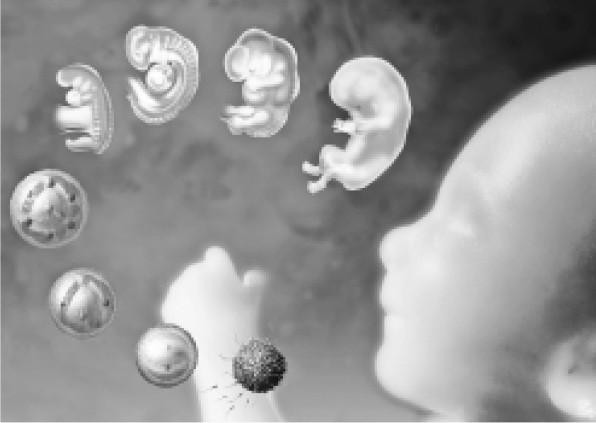

尽管可以被B超或其他更具侵入性的医疗设备探查，子宫仍是一个神秘的器官。从生理学角度看，子宫内部的活动充满谜团。妊娠的过程可以通过人体解剖学的研究初步呈现，一些表层的机理也可以得到解释，但相关过程的本质和驱动器官运作的详细机制仍有待澄清。
法律一直满足于不顾形而上学的争议，专注于讨论子宫内的相关问题。法律倾向于使用“权利——义务”的理论工具在“出生前”这一灰色地带游刃，拒绝陷入关于早期胚胎法律地位的哲学争论。在运用“权利—义务”工具的过程中，法律恪守适当而恭敬的谨慎。
一般而言，在世界上大多数地方，如果你想成为父母，遵循自然规律你就可以达成心愿。你的配子可以和几乎任何人的配子融合。如果不想生儿育女，那么你没有义务这么做。
不足为奇，法律保障生育的权利，至少不给人们的生育过程制造过多障碍。
繁育后代是人类最根本的本能，但优生学的阴影仍自然而然地引起恐慌。
法律很少对生育的权利设定限制。为了避免明显的遗传缺陷，许多国家都禁止乱伦。出于类似考虑，法律不允许在人工生殖中使用（比如）父母和子女或兄弟姐妹之间的配子制造胚胎。在大多数地方，通过融合人类的配子和其他物种的配子来制作（或制作和繁育）胚胎被法律禁止。国家也立法规范年轻人的婚育，要求人达到适当的年龄方可合法地交媾或结婚。假如遵守伦常、达到法定年龄且不涉及人兽混交的问题，人便可以自由繁衍。
《欧洲人权公约》第12条的规定体现了这一国际共识：“达到结婚年龄的男女享有结婚和成立家庭的权利，各国制定结婚和成立家庭的法律。”该条后半句的规定存在掏空前半句权利的可能，但实际上任何国家都不会这么做。
以上规定并不意味着人们有权获得公共资助以实施体外受精。这也不意味着在服刑过程中，囚犯有权请求当局在任意时间安排其配偶入狱进行“夫妻访问”［参见“ELH和PBH诉联合王国案”（1998）］。不过在配偶存在罹患不孕症风险时，前述情况可以有例外处理［参见“梅勒诉内政大臣案”（2002）］。
主张生育属于权利是稀松平常的，主张生育不属于义务 则极为平常，以至于主张生育属于义务会被视为另类。事实上，主张生育属于义务完全具备充分的理由，法庭上也常常探讨这个理由。
黛安娜·布拉德的丈夫在世时，曾储存精子。黛安娜·布拉德希望使用这些精子受孕。法院拒绝了她的请求，判决的理据非常充分：这是为了让该男子的灵魂免于面对那未曾谋面的子女所带来的情感上或金钱上的困扰。判决对该案造成了残酷的后果，但这并不是推翻判决的理由［参见“人类授精和胚胎研究管理局诉布拉德案”（1997）］。
可能有观点认为，如果事情涉及已经植入子宫的胚胎，而不仅仅是使用精子，情况会有所不同。胚胎的利益加上母亲的生育意愿，分量应当足够胜过男人对繁殖的拒绝。然而，事与愿违，拒绝为人父的自主权利胜过所有相反的主张［参见“埃文斯诉联合王国案”（2006）］。
我们可以发现，相同的思维被用于另一些案件，即胚胎的父亲要求法院阻止妻子或女友进行人工流产的情形。在人工流产合法的情形中，男方的诉讼请求被驳回了。拒绝为人父母的权利高于为人父母的权利［参见“计划生育协会密苏里州中部分会诉丹福思案”（1976）、“C诉S案”（1988）和“佩顿诉联合王国案”（1981）］。
综上所述，我们也许可以得出结论：与其他任何权利冲突时，胚胎或胎儿的权利并不占上风。但如果以此为普遍结论，并不准确。
法律的稳定性不应受到苛责，其哲学上的复杂性更不应受到指责。本书撰写时，除了极少数笃信天主教的拉美国家，人工流产在世界各国几乎都是合法的。
然而，不同国家的规定千差万别：有的国家仅允许为了挽救母亲的性命而实施人工流产；另一些国家则允许基于任何理由实施人工流产。一般情况下，社会大众的宗教信仰状况决定了该国人工流产的合法空间，这不足为奇。但是，这并不必然意味着人工流产宽松的国家，对胚胎的法律地位毫不在意。相反，这些国家的相关法理论述显示出那些反堕胎国家有时缺少的缜密思考。只是（他们会说），在审慎而痛苦地考虑过这个冲突之后，他们认为，意志坚定的成年母亲所享有的权利高于神秘的胚胎所享有的权利（如果存在）：前者是明显而可识别的，后者却是模糊且附条件的。
反堕胎运动者们会说，这些都是无稽之谈。确实，在价值权衡过程中存在两种权利：母亲的权利和胚胎的权利。母亲的生命权很少会受到威胁。假如遇到这种情形，就算是最保守的天主教徒也认为应另当别论。
通常情况下，受到威胁的是母亲避免因几个月的怀孕带来生活不适的权利，她自主选择生活道路的权利也会减损。“生命至上” [3] 论者指出，这些权利本质上属于便利权，它们的保障一般遵照《欧洲人权公约》第8条。此外，“生命至上”论者进一步论证道，胎儿生命权的保障应当一直具有压倒性优势（比如《欧洲人权公约》第2条所规定的）。这不是显而易见的吗？从逻辑上讲，便利权必须以生命权为前提且服从于生命权。假如生命不存在，便利也就无从体验。
相关争议已有充分的讨论，稍后我们再探讨这个议题。但就当下而言，该论证足以让法学家和法官（其中许多人希望保持合法人工流产这个可能选项）
对赋予胚胎任何权利持审慎态度，至少是就早期胚胎的情形而言。这通常体现为拒绝承认胚胎、胎儿或未出生的婴儿拥有法律人格（每次有人鲁莽地使用“未出生的婴儿”一词，都会激起轩然大波）。在这种认知模式中，仅仅由于被移动几英寸、从子宫内拽出阴道，婴儿就神奇地变成完整的人，获得法律对人的全部保障。尽管简明清晰，这种认知模式存在着既与生理学事实不一致（例如，事实上妊娠23周以后胎儿的发育过程会变得更为复杂），又与人的感性认知不一致的缺陷。
在某些法律领域，赋予胎儿法律人格有利于法律的实施。事实上，有些制度确实是为此而设立的。例如，在英国法中，胎儿可以继承财产。但是出于其他考虑，赋予胎儿法律人格并不那么有利于法律的实施。于是，法律动动手脚，胎儿的法律人格就烟消云散。它们若隐若现，忽有忽无。
我们来看以下几个案例。
这些关于胎儿法律地位的不同定位被用于不同目的。例如，在加拿大和其他很多国家，胎儿不能就生母在怀孕期间对其造成的损害提起诉讼。然而，假如医生或其他任何人导致胎儿受到伤害（例如，由于过失给怀孕的母亲使用不合适的药品），胎儿在出生后便可以起诉医生索偿。医生不可以反驳：“在我犯下医疗过失的时候你还不存在，我怎么可能伤害一个不存在的人？”抑或是“你和母亲的人格不可分割，因此你的母亲，而不是你，才是适格的原告。”
有一个明显的异常之处值得注意。法律实际上告诉胎儿：“如果你顺利出生，成为一个真正的人，我们将溯及既往赋予你完整的人格以确保你是法律认可的侵权适格对象。”这一理由让人听起来不那么顺耳。特别是在前面提到的溯及既往赋予完整人格被实施的情况下，关于母亲免于被诉的豁免也存在类似问题。母亲与胎儿有最明显的联系、最有可能伤害胎儿且最有能力保护胎儿，同时母亲应当（当然）被视为对未出生的婴儿负有某种监护责任的人，她又为何是唯一不用承担法律责任的人？
在另外一些情况下，为胚胎、胎儿或未出生的婴儿赋予法律人格在一定意义上 是有用的。因此，这一观点被越来越多地提及，并不奇怪。这既是回应现实的需要，也能为达成相关目的提供必要支撑。
以下我们将举例说明。体外受精的过程会产生许多“备用”胚胎。它们应当被如何对待？直觉告诉我们，这些胚胎应受到尊重。于是胚胎被赋予足够的法律地位以体现这种尊重。大多数司法管辖区的制定法或判例法都或多或少对此进行了规定。负责胚胎/胎儿医学研究的英国波尔金霍恩委员会在1989年提出建立国际共识。它指出，胎儿具有“特殊的法律地位……在胎儿每一个发育阶段，我们会表达基于其发育成真正的人的潜质而应有的必要尊重”。
在一起涉及对怀孕母亲实施强制医疗的案件中，为了拯救胎儿，英国上诉法院判决强调：“无论被看作什么，一个36周大的胎儿显然并非无关紧要；如果能自然存活，它会有生命，而且无疑是一个活生生的人。”［参见“圣乔治国民医疗服务信托诉S案”（1998）］
欧洲人权法院持这种立场，即对胚胎、胎儿的法律地位采用这种操作便利但不太体面的不可知论态度。该立场导致了发生在里昂综合医院的不幸。
两位姓“武”（Vo） [4] 的女士于同一天在里昂综合医院就诊，一位怀孕六个月，另一位是去摘除避孕环的。由于医院混淆了两位患者，医生们尝试在怀孕的武女士身上摘除不存在的避孕环，导致她的羊水膜被刺穿。武女士的怀孕被迫终止，医院实施了引产。
该案上诉到斯特拉斯堡的欧洲人权法院，主要争点是未出生的婴儿是否享有《欧洲人权公约》第2条规定的生命权。该条的表述是：“任何人的生命权应当受到法律的保护。”这里的“任何人”是否涵盖未出生的婴儿？假如答案是不加限定的“是”，影响会非常深远，那些允许人工流产的法律岌岌可危。
考虑再三，法院的多数方意见选择含糊其词，其判决实际上没有做出抉择。判词指出：“在欧洲的层面……对于胚胎/胎儿的属性和法律地位尚未达成共识……从好的方面看，或许可以认为，各国不同制度间的最大公约数是胚胎/胎儿属于人类。胚胎/胎儿因具备发育成人的可能性而受到民事法律的保护……为了人的尊严而请求法律保护并不能推导出胚胎/胎儿属于《欧洲人权公约》第2条‘生命权’的主体‘人’……基于前述分析，法院深信，现阶段回应未出生的婴儿是否属于《欧洲人权公约》第2条所保障的人的范围这一抽象命题，既不可取也不现实。”［参见“武诉法国案”（2004）］从判词中不难看出，胚胎/胎儿被赋予某种法律地位，但法院无意厘清，更不愿展开演绎。
在美国，相关问题也面临类似的处境。有观点认为，胎儿不属于美国联邦宪法第十四修正案所保障的“人”［比如，参见“罗伊诉韦德案”（1973）中布莱克门大法官的意见书］。然而在一些特殊情况下（特别是达到妊娠三个月这一关键的分水岭），胎儿有权受到美国联邦宪法第十四修正案的保障。这或是基于类推，或是基于法制的微调，抑或是出于政治上的权宜考虑。
在这种环境下，法律只能通过零敲碎打的方式勉强提供各种解决方案。由于缺乏清晰且可识别的法律身份，胚胎抵御外来侵害困难重重。胚胎的地位低于真实的人，甚至也低于并不实际存在的人。胚胎只是潜在的人，这是反对为胚胎赋予人类同等权利的观点的理论基础之一。对胚胎的医学研究通常被允许（例如在英国），理由是这项研究对尚未出生的人类具有重要价值。这种观点不能说是错误的，但条理不清。
国家通常规定禁止孕育具有特定遗传特征的孩子（禁止乱伦的法律），但罕有国家强制母亲在怀孕到足月前流产。当然，也有例外。缺乏行为能力的患者如果怀孕，可以被强制实施人工流产，哪怕违背其意愿。相关判决的论述往往沿着同时保护母亲和孩子（如果想生下来的话）最佳利益的脉络推进。这是为什么呢？
关于母亲最佳利益的分析是直截了当的，强制人工流产并未真正违背母亲的意志。她并未（直接）表达相关意愿。但是关于未出生婴儿的利益呢？
以下几个重点值得关注。首先，胎儿在司法辩论中获得了发言权（尽管就其他目的而言，胎儿的主体地位欠缺法律承认）。仅需表达不希望继续存在的意见后就能结束陈词，它也仅被允许作此陈述。其次，根据英国和其他许多司法管辖区的法律，儿童不能基于“假如母亲没有生我更好”的主张向母亲索偿，这种主张被认为违背公共政策［例如，参见“麦凯诉埃塞克斯区域卫生局案”（1982）］。假如公共政策禁止儿童的这种主张，那么为何允许（更不用说是邀请和基于）未出生婴儿提起这种主张？
父母提出的索赔内容往往涉及养育那些计划外出生子女的经济成本，这给公众和司法带来了一些压力。这些案例通常发生在避孕操作疏忽的情形，或是没有提示避孕措施失效风险的情形下。于是，孩子的父母要求获得孩子的抚养费。
这些诉讼请求是令人不悦的，作为案件当事人的父母不希望生育孩子。在英国，这种不适感蔓延到了上议院。上议院的判决指出，孩子的出生归根结底应被认为是一件幸事，这可以远远抵消相关的经济负担［参见“麦克法兰诉泰赛德卫生局案”（2000）］。当然，这仅仅是从政策角度来阐释，且该政策似乎并未延伸到将未出生的婴儿视为幸事。说得没错，谁说法律内部必须是一致的？这把我们带回人工流产本身。
法律上有两种路径来探讨人工流产问题。一种路径是从权利的角度论证。在怀孕的不同阶段，有些司法管辖区会认为“母亲享有实施人工流产的权利”或者“胎儿享有不被杀死的权利”。另一种路径则主张人工流产表面上看不具有合法性，但自有其合理性。第一种路径的实践以美国为代表，美国联邦最高法院的著名判决“罗伊诉韦德案”（1973）即为典型。
第二种路径的实践则以英国为代表。
“罗伊诉韦德案”的多数方意见认为，按照美国联邦宪法第十四修正案保障的个人自由免受国家限制的规范内涵，“女性关于是否终止怀孕的决定权”受到宪法的保障。法院也指出，女性的这一权利并非绝对的，多数方意见就此论述道：国家“可以适度地维护一些重要利益，包括保障健康、维持医疗标准或是保护潜在的生命。在怀孕的某些时间点，这些个别的利益足以支撑国家对人工流产进行监管”。
于是，在母亲和胎儿相互竞争的权利冲突中，国家合法地扮演着裁判的角色。胎儿的权利是逐渐增加的。在妊娠的前三个月，国家侧重保障孕妇的权利。在这期间，“主治医生在征询患者意见以后，根据医学专业判断来自主决定是否终止患者的妊娠，不受国家的限制”。但是，在保障胎儿生命的问题上，国家也具备利害关系。何时介入女性连续的身体自主权是正当的？法院认为，主要标准在于胎儿是否发育到可在子宫外独立生存。此后，婴儿才能独立于母亲，拥有一个“有意义的人生”。
因此，在妊娠的前三个月，女性的自主权不受国家干涉。随着胎儿生存能力的提高，国家可以基于保护母亲健康的理由对人工流产加以限制［与母亲健康有关的因素被视为医学专业判断，参见“多伊诉博尔顿案”（1973）］。当胎儿度过子宫外独立生存期后，国家可以对人工流产加以限制，直至完全禁止（除非为保障孕妇的生命或健康而必须实施人工流产）。
这种不对称的法律保障有些不同寻常。在妊娠的前三个月，国家不能干预母亲的决定，亦即不能对胎儿提供保护。但在子宫外独立生存期，国家没有义务（虽然可以）对胎儿提供保护。国家的两种保护义务（对母亲的健康和对胎儿的生命）不是等量齐观的。
很多司法管辖区采用类似的基于权利的路径来讨论人工流产问题。通常，相关法律论证为胎儿提供的保护优于美国。许多认为胎儿生命权高于母亲自主权的国家，或基于胚胎法律地位的神学假设（在许多信奉天主教的国家和信奉伊斯兰教的国家），或基于人性尊严，来保障胎儿的权益。
在英国，和在澳大利亚的一些州一样，人工流产问题并未进入“权利”话语（尽管毫无疑问，相关论点可以运用《欧洲人权公约》第8条的话语来加强，该条极为宽泛地赋予了人们按自身意愿生活的权利——或许也包括免受计划外生育子女所困扰的权利）。相反，人工流产被认为原则上非法、例外情形下合法。然而实际上，在英国，妊娠24周以内（规则变化的分界点）均可以按需要实施人工流产。这并非将人工流产定位为权利，只是说你可以轻而易举地找到医疗机构实施人工流产，不会因此而受到刑事起诉。
具有讽刺意味的是，相较于以权利为基础的司法管辖区，英国的路径使胎儿的生存面临更大威胁。假如严谨地运用权利作为母亲安全的基础，至少存在某种可能（理论上确实如此），使胎儿的权利主张在司法过程中获得同等对待。

图2 发育中的胚胎/胎儿。有些观点认为，胚胎或胎儿的道德地位和/或法律地位随着它的发育而变化
同卵双胞胎们互为克隆。他（她）们并不会令人恐惧，也不会必然导致功能异常。然而，对于制造克隆人的恐惧几乎影响着每个人。
涉及生殖性克隆（以胚胎足月生产为目的的克隆）的恐惧并不总是与人类胚胎的法律地位相关。不同的是，相关的恐惧关乎逾越干预自然的正当界限（“扮演上帝角色”），或是对于女性生出她自己或是她的伴侣这一想法感到恶心，同时所有克隆参与者均会蒙受心理阴影。
相关伦理问题错综复杂，相关法律问题却相对简单。几乎所有地方都将涉及人类的生殖性克隆视为非法活动。
相比而言，对治疗性克隆（制作克隆胚胎用于医学研究）的管制则充斥着政治争议。例如，英国的法律规定，独立监管机构（人类授精和胚胎研究管理局）有权审批特定的申请。在美国，对克隆的监管属于各州和联邦的共同立法事项。当共和党执政时，胚胎研究的空间可能会被压缩殆尽。
在胚胎研究被定义为非法的地方，立法者对胚胎的地位作了一些评价，认为对胚胎的尊重高于医学研究可能带来的潜在好处。禁止胚胎研究的论证往往依照以下方式权衡：“从道德上看，制作和销毁胚胎所造成的恶，大于治愈运动神经元疾病所带来的善。”如果这里的“善”“恶”只是与不可识别的人相关，这种权衡过程没什么困难。忽略抽象的人很容易。然而，当我们面对活生生的人时，以下说辞却是难以启齿的：“由于我相信八细胞期胚胎是不可侵犯的，你只有死路一条。”这常常是“兄姐救星”（saviour sibling） [5] 案件的主要争点。
三岁的扎因·哈什米患有β地中海贫血症。他最有可能生存的机会莫过于从足够匹配的兄弟姐妹那里接受脐带血干细胞。
通过自然受孕生出符合条件的弟弟妹妹的概率很低。于是他的父母寻求许可，想通过体外人工受孕方式培养胚胎。当胚胎发育到八细胞期，将从每个胚胎取出一个细胞进行测试，以确定胚胎是否能挽救扎因·哈什米的生命。英国的监管机构批准了该项申请，但一个既反对销毁未使用胚胎又反对将人类生命医疗工具化的“生命至上”团体向该项批准发起诉讼，最终败诉［参见“昆塔瓦莱（代表‘生殖伦理评论’组织）诉人类授精和胚胎研究管理局案”（2005）］。尽管该案主要围绕着各种技术细节，但其对原则的坚持是显而易见的。该案甚至造成“生命至上”游说者们的分裂：如果放任一个三岁的儿童死去，你还是真正的“生命至上”者吗？
早期，类似案件在很多司法管辖区曾让法官们踯躅不前。法律人倾向于采用绝对化的立场，即赋予事物明确而不可剥夺的法律地位。他们倾向于认为，采用这样的立场就能更好地解决关于生命的难题。然而，如果任何包含人类基因组的物质都具有不可分割的自然人地位，那些极度虔诚、保守的法官将被迫转向道德和法律上的相对主义，这显然会让他们感到不适。如果能抛弃成见、实事求是地观察生命，你会发现它们并不简单。正因为生命具有复杂性，法律在定义生命时才不能一概而论。